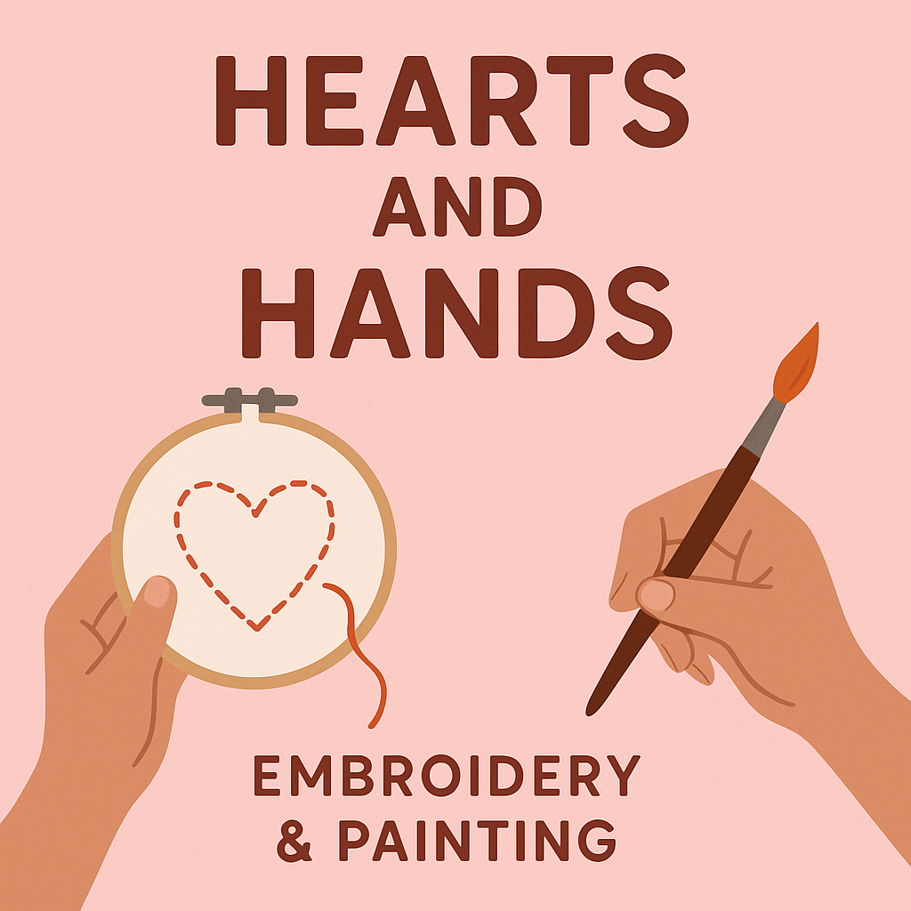

Handmade with love by mom and me
Explore paintings, embroidery, and more.
At Hearts and Hands, we’re a mother-daughter duo creating handmade treasures filled with love, color, and care. What began as a shared passion for painting and embroidery turned into a cozy corner where creativity and tradition meet.
Each piece we make carries a bit of our story — the quiet afternoons spent stitching, the joy of picking out colors together, and the laughter that fills our little studio. From hand-painted art to delicately embroidered textiles, every item is made with intention and heart.
Whether you're here to browse, find something special for a loved one, or simply enjoy handmade beauty, we’re so glad you stopped by. Thank you for supporting our craft and the love behind it.
With warmth,
Mom & Me – the Hearts and Hands team